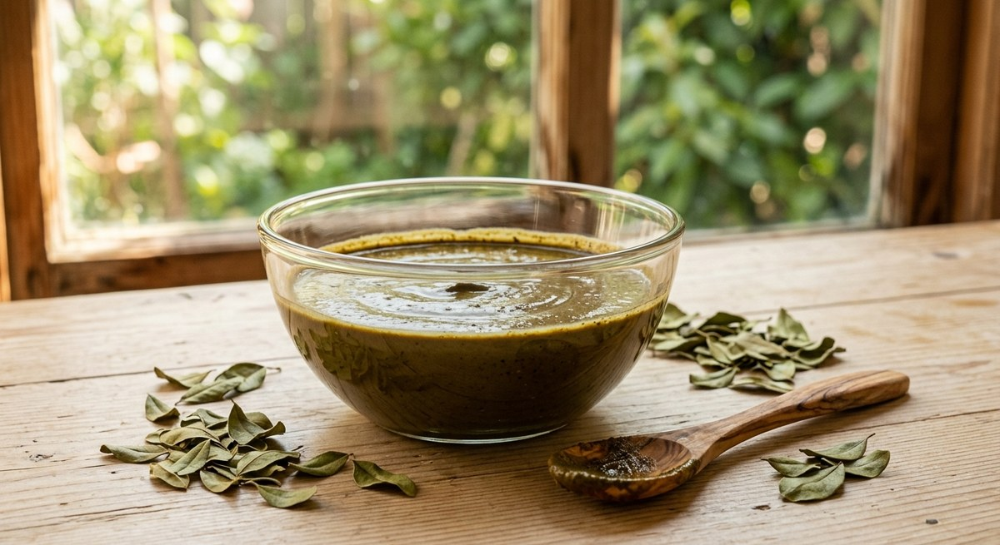

« Sidr et henné », « sidr avant ou après le henné », « mélanger les deux » : ces questions reviennent sans cesse dès qu'on s'intéresse aux soins capillaires végétaux. Elles viennent d'une confusion facile à comprendre — deux poudres de feuilles séchées, vertes toutes les deux, appliquées en pâte de la même façon. Pourtant, leur chimie n'a presque rien en commun. Voici ce que l'on peut affirmer sur chacune, et où s'arrête réellement ce que l'on sait.
Deux poudres, deux fonctions : l'une colore, l'autre lave
Le henné provient des feuilles de Lawsonia inermis, un arbuste de la famille des Lythracées cultivé en Afrique du Nord, au Moyen-Orient et en Asie du Sud. Le sidr, lui, vient des feuilles d'un arbre du genre Ziziphus — le jujubier — dont nous avons détaillé les espèces dans notre article sur les différences entre sidr et jujubier. Deux familles botaniques distinctes, deux compositions distinctes : le henné doit sa réputation à un pigment, le sidr à ses saponines. Confondre leurs usages, c'est attendre d'une poudre ce que l'autre seule peut faire.
Comment le henné colore réellement les cheveux
La molécule responsable est le lawsone (2-hydroxy-1,4-naphtoquinone). Dans une feuille intacte, elle ne tache rien : elle reste prisonnière du tissu végétal, et c'est seulement une fois la feuille séchée, broyée puis mise en pâte que le colorant migre hors de la poudre et se lie aux protéines qu'il rencontre (Wikipédia (EN), Henna). Cette liaison n'est pas un simple dépôt de surface : le lawsone réagit avec les groupements aminés de la kératine par une réaction chimique d'addition, ce qui explique la solidité de la teinte obtenue (ScienceDirect Topics, Lawsonia inermis).
Un travail publié en 2026 dans l'International Journal of Cosmetic Science précise un point souvent ignoré : dans la feuille, la quantité de lawsone réellement libre est très faible, l'essentiel étant présent sous forme d'hétérosides — les hennosides A, B et C — qui doivent d'abord être hydrolysés pour libérer le colorant. Les auteurs ont d'ailleurs conçu un système en deux temps, séparant les précurseurs d'une enzyme (une β-glucosidase) chargée de déclencher la libération de la couleur (Dallmann et al., International Journal of Cosmetic Science, 2026). C'est exactement ce que cherche à obtenir, de façon empirique, la « libération du colorant » décrite par les guides d'utilisation du henné : laisser reposer la pâte plusieurs heures en milieu légèrement acide avant de l'appliquer. Ces durées et ces pH circulent dans des ressources communautaires et commerciales, non dans des publications scientifiques — mieux vaut les considérer comme des usages transmis que comme des paramètres validés.

Conséquence pratique : le henné colore, et il le fait durablement. Sur la peau, la teinte s'atténue avec le renouvellement des couches superficielles en une à trois semaines ; la fibre capillaire, elle, ne se renouvelle pas, et la coloration ne part pas au lavage.
Ce que le sidr apporte — et ce qu'il ne fait pas
La feuille de Ziziphus spina-christi a fait l'objet d'une revue de 186 travaux publiée en 2022 : elle y est décrite comme riche en saponines — dont les christinines, caractéristiques de l'espèce — ainsi qu'en flavonoïdes et polyphénols (Abdulrahman et al., Advances in Pharmacological and Pharmaceutical Sciences, 2022). Une analyse par HPLC identifie l'acide gallique et l'acide ellagique comme composés phénoliques majoritaires de la feuille (El-Shahir et al., Plants, 2022). Aucune de ces analyses ne rapporte de naphtoquinone colorante comparable au lawsone : ce sont les saponines qui donnent à la poudre de sidr son pouvoir lavant et sa mousse discrète, pas un pigment.
Côté cuir chevelu, la donnée la plus directe reste un essai yéménite : un extrait éthanolique de feuilles de sidr, formulé en shampooing, testé quatre semaines sur 80 volontaires souffrant de pellicules, avec 86 % d'améliorations déclarées — un résultat encourageant mais obtenu sans groupe témoin décrit, et sur un extrait, pas sur la poudre brute (Alzomor et al., The Thai Journal of Pharmaceutical Sciences, 2021). Nous détaillons ces limites dans notre article sur le sidr face aux pellicules et au cuir chevelu sec. Retenons l'essentiel pour le sujet du jour : le sidr est un nettoyant végétal doux, pas une coloration.
Sidr avant ou après le henné ?
C'est la question la plus posée, et la réponse honnête est qu'aucune étude publiée ne l'a tranchée. Deux logiques circulent, toutes deux cohérentes sur le papier, aucune mesurée.
La première consiste à laver au sidr avant le henné : un cheveu débarrassé de ses résidus de silicones et de produits coiffants offre une surface plus homogène, ce qui est le principe même d'un lavage préalable avant toute coloration. La seconde consiste à utiliser le sidr après, comme lavage doux des jours suivants, dans l'idée de rincer l'excédent de pâte sans agresser la fibre fraîchement teintée. On lit aussi, à l'inverse, la crainte qu'un lavage au sidr « décape » la couleur : les saponines sont des tensioactifs végétaux, mais comme le lawsone est chimiquement lié à la kératine et non simplement déposé, il n'y a pas de raison mécanique évidente qu'un lavage doux l'élimine. Cela reste un raisonnement, pas une mesure — personne n'a publié de comparaison de tenue de couleur avec et sans sidr.
Mélanger sidr et henné dans la même pâte : ce que l'on peut en dire
Le mélange des deux poudres dans un même masque est une pratique répandue, et nous en proposons d'ailleurs une version dans nos recettes de masques à la poudre de sidr. Un point est certain, et il est purement arithmétique : remplacer une part de henné par du sidr réduit d'autant la quantité de lawsone apportée, donc l'intensité de la coloration obtenue. Qui cherche une teinte franche a intérêt à ne pas diluer ; qui souhaite un reflet discret peut au contraire y trouver son compte.
Au-delà de cette évidence, tout est incertain. Nous n'avons trouvé aucune publication mesurant si les saponines du sidr gênent ou facilitent la libération du lawsone, si le pH du mélange reste favorable à la coloration, ou si l'association apporte un bénéfice sur le cuir chevelu que le henné seul n'apporterait pas. Les ressources qui affirment le contraire, chiffres à l'appui, sont presque toujours des pages commerciales. Sur ce point, la position raisonnable est de tester en petite quantité sur une mèche avant d'engager une tête entière.
Attention aux poudres vendues sous le nom de « henné »
Deux appellations méritent une vigilance particulière, parce qu'elles ne désignent pas du henné. Le « henné neutre » n'en contient pas : il s'agit généralement de Cassia obovata, une plante qui ne modifie pas la couleur des cheveux. Le « henné noir », lui, est nettement plus problématique : il peut contenir de la paraphénylènediamine (PPD), un colorant chimique dont l'usage sur la peau est interdit en Europe. Les réactions allergiques qu'il provoque apparaissent plusieurs jours après l'application et entraînent une sensibilisation définitive, avec des réactions croisées ultérieures aux colorations capillaires chimiques (Wikipédia (EN), Henna). L'Agence nationale de sécurité du médicament alerte régulièrement, depuis 2006, sur les risques des tatouages éphémères au henné noir (Vidal, tatouages éphémères noirs à base de henné). Un henné naturel est rouge-brun, jamais noir d'emblée — et la même exigence de traçabilité vaut pour le sidr, comme expliqué dans notre article sur comment reconnaître une poudre de sidr pure et dans notre comparatif des boutiques qui livrent en France.
Ce qu'aucune étude ne dit encore
À ce jour, nous n'avons identifié aucun essai clinique portant sur l'association sidr–henné, aucune mesure de tenue de couleur selon l'ordre d'application, aucune donnée sur la fréquence idéale, et aucune évaluation de l'effet de ces poudres sur un cuir chevelu pathologique. Les deux plantes peuvent par ailleurs provoquer des réactions individuelles : un test sur une petite zone avant la première utilisation reste la précaution minimale, et un cuir chevelu douloureux, très rouge ou suintant relève d'un avis dermatologique, pas d'un masque maison.
À retenir
Sidr et henné ne sont pas concurrents : l'un lave, l'autre colore, et c'est précisément pour cela qu'ils sont souvent utilisés dans la même routine. La chimie du henné est bien documentée — le lawsone, ses précurseurs hétérosidiques, sa fixation sur la kératine ; celle du sidr l'est aussi pour ce qui est de sa composition en saponines et en polyphénols. Ce qui manque, c'est tout ce qui concerne leur association : ordre, proportions, effets croisés. Dans ce vide, mieux vaut annoncer l'incertitude que fabriquer une règle.
Sources
- Dallmann M. et al. — Reinventing henna: Enzyme-catalysed colour release from stabilized Lawsonia inermis L. extracts, International Journal of Cosmetic Science, 2026
- ScienceDirect Topics — Lawsonia inermis (mécanisme de fixation du lawsone sur la kératine)
- Wikipédia (EN) — Henna (lawsone, henné neutre, henné noir et PPD)
- Vidal — Tatouages éphémères noirs à base de henné : des risques de réactions cutanées sévères (alertes ANSM)
- Abdulrahman M. D. et al. — Ethnopharmacology, Biological Evaluation, and Chemical Composition of Ziziphus spina-christi (L.) Desf.: A Review, 2022
- El-Shahir A. A. et al. — Bioactive Compounds and Antifungal Activity of Leaves and Fruits Methanolic Extracts of Ziziphus spina-christi L., Plants, 2022
- Alzomor A. K. Y. et al. — Subacute Toxicity Study and Clinical Trials for Ziziphus spina-christi Leaves Extract as an Anti-dandruff Shampoo, The Thai Journal of Pharmaceutical Sciences, 2021